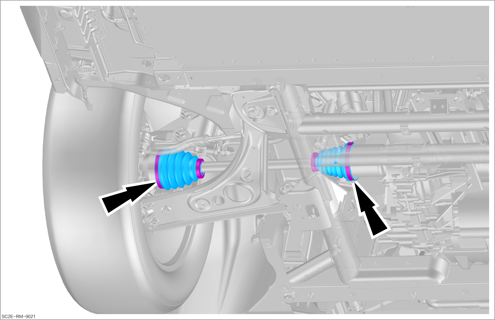

Visual inspection of CV joint universal joint dust cover

The inspection methods for universal joint dust covers inside and outside the CV joints on both sides are the same.
-
Remove the front motor lower mudguard assembly before inspection.
-
Check whether universal joint dust covers inside and outside the CV joints are free from damage, leakage, and aging. In case of any abnormality, carry out relevant repairs.
-
In addition, check whether the fixing clamp of universal joint dust cover is not loose.
Reminder-
The universal joint dust cover may be damaged due to external factors, such as being hit by stones or being damaged during assembly.
-
If dirt or moisture enters due to the damage of the dust cover, the universal joint may be damaged.
-
-
Obtain a new work order for repair or replacement.